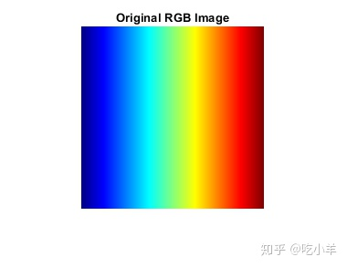
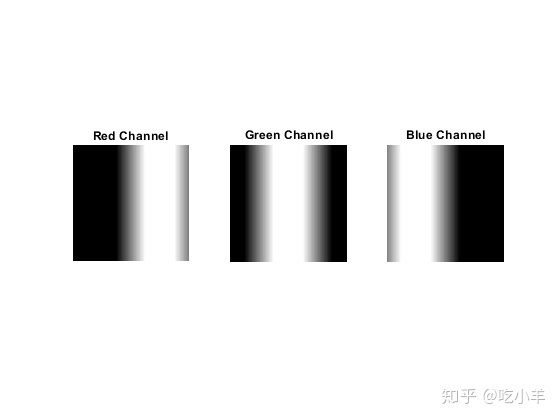
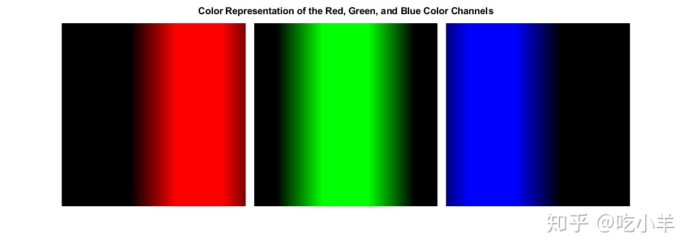

Home
本示例创建一个简单的RGB图像，然后分离颜色通道。该示例将每个颜色通道显示为灰度强度图像和彩色图像。
创建具有红色，绿色和蓝色连续区域的RGB图像。显示图像。
imSize = 200;
RGB = reshape(ones(imSize,1)*reshape(jet(imSize),1,imSize*3),[imSize,imSize,3]);
imshow(RGB)
title('Original RGB Image')

分离三个颜色通道。
[R,G,B] = imsplit(RGB);
用灰度显示每个颜色通道。请注意，图中每个单独的颜色平面都包含一个白色区域。白色对应于每种单独颜色的最高值（最纯粹的色调）。例如，在红色通道图像中，白色代表最高浓度的纯红色值。当红色与绿色或蓝色混合时，会出现灰色像素。图像中的黑色区域显示不包含红色值的像素值，换句话说，R == 0。
figure
subplot(1,3,1)
imshow(R)
title('Red Channel')
subplot(1,3,2)
imshow(G)
title('Green Channel')
subplot(1,3,3)
imshow(B)
title('Blue Channel')

显示每个颜色通道的颜色表示。在这些图像中，所需的颜色通道保持其原始强度值，而其他两个颜色通道中的像素值设置为0。
创建一个全黑通道。
allBlack = zeros(size(RGB,1,2),class(RGB)); justR = cat(3,R,allBlack,allBlack); justG = cat(3,allBlack,G,allBlack); justB = cat(3,allBlack,allBlack,B);
显示所有色彩通道。
figure
montage({justR,justG,justB},'Size',[1 3], ...
"BackgroundColor",'w',"BorderSize",10);
title('Color Representation of the Red, Green, and Blue Color Channels');

======================================================================
我的测试结果及程序
下面是我测试的代码：

注：本文根据MATLAB官网内容修改而成。